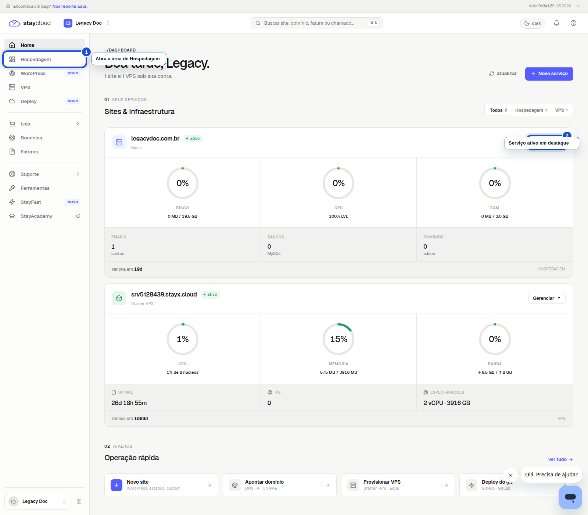
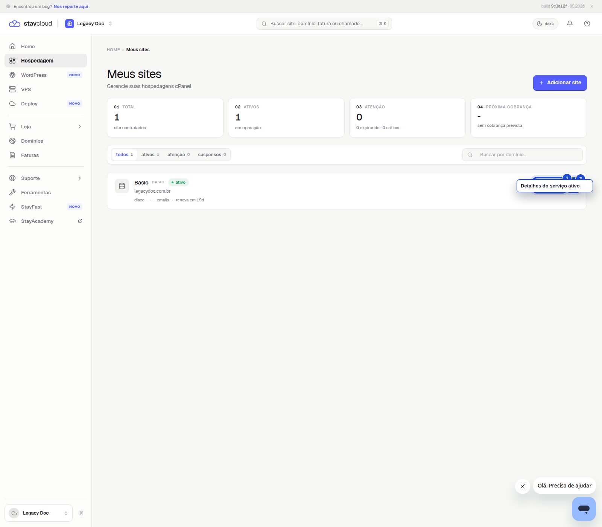
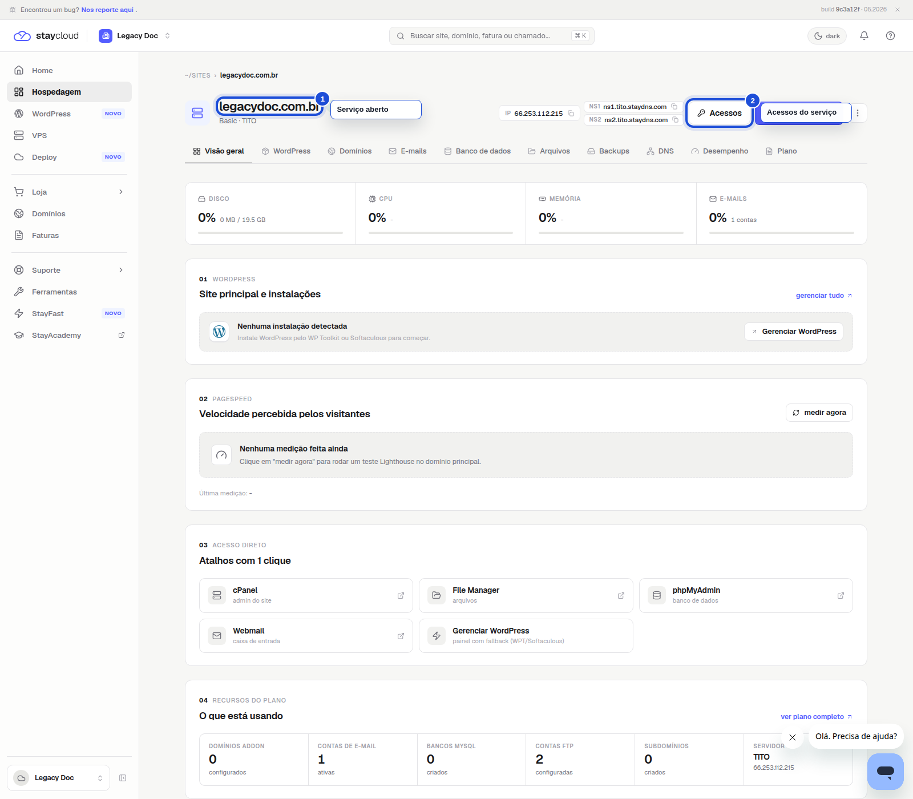

Objetivo
Você vai aprender a entrar no Painel Novo e identificar os serviços ativos da sua conta com segurança.
Boa prática: se você tiver mais de um serviço ativo, confira o nome do domínio antes de clicar.
Veja como localizar seus serviços ativos no Painel Novo da StayCloud e abrir a hospedagem, domínio ou produto correto sem sair do fluxo principal.
Você vai aprender a entrar no Painel Novo e identificar os serviços ativos da sua conta com segurança.
Entre no Painel Novo da StayCloud e confira a tela inicial. É nela que você começa a navegação da sua conta.

No menu lateral, clique em Hospedagem. Essa área mostra os serviços contratados da sua conta.

Procure o cartão do serviço com status ativo. Confirme o nome do domínio e, se quiser abrir os detalhes, clique no cartão do serviço para continuar.

Agora você sabe como localizar seus serviços ativos no Painel Novo da StayCloud e abrir o serviço correto com mais segurança.